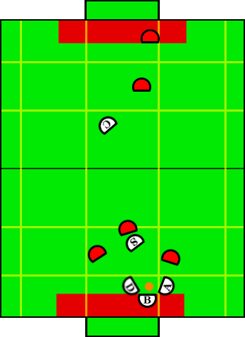

Play: Cage Defense
Description:
This play is called when we are in the worst possible scenario:
the ball is in both the death zone and the middle sector. This is one of
the weakest situations in this years competition, for the most part due to the
increased goal width and overall field width. The defender and aggressor
form a cage around the blocker, allowing the blocker to obtain possession
of the ball. The special op defender blocks interfering opponents while
the creator stays farther upfield, hopefully keeping a few opponents with
him and out of the action.
Illustration:

Positions Present:
- Blocker
- Defender
- Special Op Defender
- Aggressor
- Creator
Position Strategies:
Blocker:
- Ball Free -> Blocker Approaches Ball
- Blocker has possession ->
Obtain Full Control:
- If outside goalie box -> Retreat with ball into defense zone
- Once inside goalie box -> Grab ball
- Inside and holding ball -> Transition to Remove Ball Defense
- Opponent has possession -> Get in opponents face, match y-coordinate of ball
All of the above covered by calling BlockerGainPossessionSkill | Aggressor: - Form cage on outside edge (farther away from center of the field) as indicated in diagram, staying out of defense zone.
Call AggressorCageDefenseSkill | Defender: - Form cage on inside edge (closer to center of the field) as indicated in diagram, staying out of goalie box.
Call DefenderCageDefenseSkill | Special Op Defender: - Screens most dangerous opponent (closest to the ball) who does not have possession outside of the death zone.
Call SpecialOpCageDefenseSkill (which in turn uses SimpleScreenSkill) | Creator: - Get open for forward pass/kick in middle or offense zones.
Call LookForChipKickSkill with bias to opposite side of field as the ball (y-coord). | Transitions:
| Blocker has possession of the ball inside the defense zone. |
| Ball is outside of middle sector. zone. |
| Ball is in middle sector, but upfield from kill zone.
|
Position Switching:
- Aggressor, Defender, SpecialOpDefender
|
- If aggressor is upfield from the special op defender, and the special op defender is on the same
side of the field (width wise) as the ball, switch.
- If defender is upfield from the special op defender, and the special op defender is on the same
side of the field (width wise) as the ball, switch.
- If defender is on outside edge of blocker and aggressor is on inside edge, switch
the defender and aggressor.
|
|